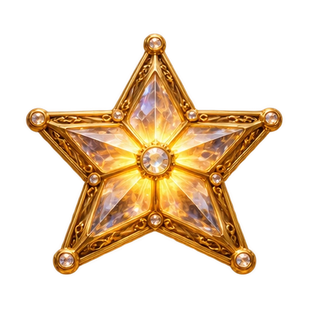

Открываем книгу чудес…
Каждая остановка приближает к дворцу
Пройденные места можно посетить снова
Твои искры погаснут, и путешествие начнётся с самого начала.
Чтобы открыть сказку, включите JavaScript в браузере.